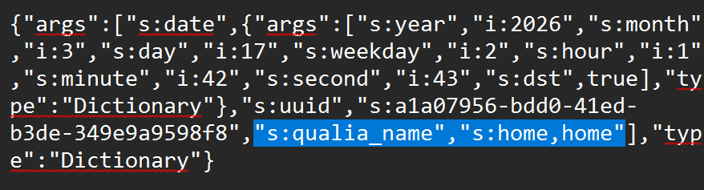

jump to crash troubleshooting or save file recovery. if you have any bug reports, please join the discord server and make a thread.
my game crashes or won't boot!
-
GPU-related fixes
-
other common fixes
- verify Steam files.
- disable your anti-virus.
- run the game from the .exe in the file system rather than from the Steam client.
- turn off Smart App Control on your device.
my qualia was corrupted!
-
locating backups
don't panic, the game stores back-ups of the previous ten saves within the
%APPDATA%/lucid blocks/backups/folder. each subfolder corresponds to a snapshot of your qualia before you saved it. to find the matching backup, look through thebackup_info.txtfiles inside each subfolder to check the name of the qualia (it'll look a little garbled, but you can find a piece of text like"s:qualia_name","s:qualia name here"as shown in the image below).
-
recovering
before doing anything, copy all the
%APPDATA%/lucid blocks/files to somewhere else on your device in case you mess up the recovery process and need to start over.assuming you found the correct backup, open the
backup_info.txtfile to find the UUID of your save file (it should look like a string of random letters, such asa1a07956-bdd0-41ed-b3de-349e9a9598f).next, you will need to copy and paste the
data.txtandregister.txtfiles into%APPDATA%/lucid blocks/qualia/{the UUID you found}/(orgift_qualiaif you downloaded this qualia from the firmament). if you did this correctly, your save file should now be restored!